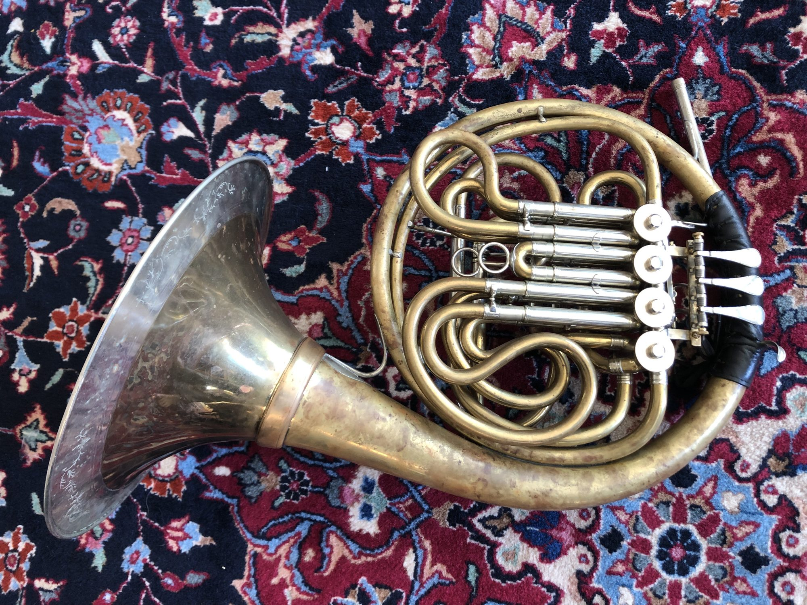

“Outstanding” — an “excellent soloist.”The New York Times
Biography
Trevor Nuckols is Principal Horn of the Evergreen Symphony Orchestra, having been appointed by Jaap van Zweden in 2026. His career spans solo, chamber, and orchestral performance, taking him to many of the world’s leading concert halls and festivals.
He previously served as Solo Horn of the Münchener Kammerorchester and as an Artist with the Chamber Music Society of Lincoln Center. He has performed and recorded as guest principal horn with the Boston Symphony Orchestra, the Saint Paul Chamber Orchestra, the Mozarteum Salzburg Orchestra, and the Philharmonie Salzburg.
He has been a featured artist at the Marlboro Music Festival and the Lucerne Festival, and a fellow of the Tanglewood Music Center, the Pacific Music Festival, the Music Academy of the West, the Sarasota Music Festival, and the New York String Orchestra Seminar.
Chamber music occupies a central place in his artistic life. As co-founder of Duo Corgano with organist David Ball, he has explored repertoire from the early Baroque to newly commissioned works, presenting programmes in venues chosen for their exceptional acoustic and architectural character. He continues to commission and premiere new works, placing them in dialogue with the established repertoire of the instrument.
Alongside his performing career, Nuckols has devoted many years to the study of the history of horn playing from the Baroque through the middle of the twentieth century, with particular emphasis on the British, French, Austro-German, and Czech traditions. He maintains a private archive of historical instruments, manuscripts, recordings, and iconography, and has lectured and given master classes at Seoul National University, the Tokyo College of Music, New York University, and the University of Cartagena.
He received his earliest musical training with Michael Corcoran before continuing his studies with Gene Berger at the Interlochen Arts Academy. He subsequently earned Bachelor and Master of Music degrees from The Juilliard School as a student of R. J. Kelley, where he held a Kovner Fellowship and undertook a period of study at the Conservatoire de Paris as a SYLFF Fellow. He later pursued postgraduate studies with Radovan Vlatković at the Universität Mozarteum Salzburg.
His artistic development has also been shaped through the guidance of Barry Tuckwell, Frøydis Ree Wekre, Gerd Seifert, Roland Berger, Jens McManama, and Lowell Greer.
Gallery
Nuckols performs exclusively on custom-built instruments.
- B-flat Alexander horn
- Ricco Kühn double horn
- Lawson descant horn
- 19th-century Raoux–Millereau piston horn